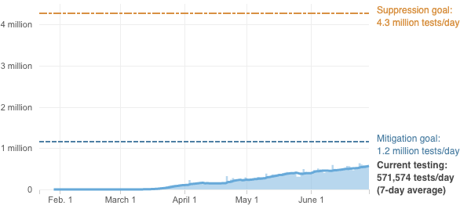

<%= await t.include("./partials/_header.html", { "slug": slug, "config": config, "id": "goals" }) %>

<% if (COPY.labels.headline_goals) { %>
<h1><%= t.smarty(COPY.labels.headline_goals) %></h1>
<% } %>

<% if (COPY.labels.subhed_goals) { %>
<h2><%= t.smarty(COPY.labels.subhed_goals) %></h2>
<% } %>

<div class="graphic">
  <div id="mitigation" class="goal">
    <h3><%= t.smarty(COPY.labels.hed_mitigation_goals) %></h3>
    <h4><%= t.smarty(COPY.labels.hed_mitigation_curve_goals) %></h4>
    <div class="chart"></div>
    <%= t.smarty(COPY.labels.mitigation_goals) %>
  </div>

  <div id="suppression" class="goal">
    <h3><%= t.smarty(COPY.labels.hed_suppression_goals) %></h3>
    <h4><%= t.smarty(COPY.labels.hed_suppression_curve_goals) %></h4>
    <div class="chart"></div>
    <%= t.smarty(COPY.labels.suppression_goals) %>
  </div>
</div>

<!-- <div id="line-chart" class="graphic" role="img"
<% if (COPY.labels.screenreader) { %>
  aria-label="<%- COPY.labels.screenreader %>"
<% } %>
>
  
</div> -->

<% if (COPY.labels.footnote_goals) { %>
<div class="footnotes">
  <p><strong>Notes:</strong> <%= t.smarty(COPY.labels.footnote_goals) %></p>
</div>
<% } %>

<div class="footer">
  <% if (COPY.labels.source_goals) { %><p>Source: <%= t.smarty(COPY.labels.source_goals) %></p><% } %>
  <% if (COPY.labels.credit) { %><p>Credit: <%= t.smarty(COPY.labels.credit) %></p><% } %>
</div>

<script type="text/javascript">
  var DATA = <%= JSON.stringify(COPY.data_goals) %>;
</script>

<%= await t.include("./partials/_footer.html") %>
